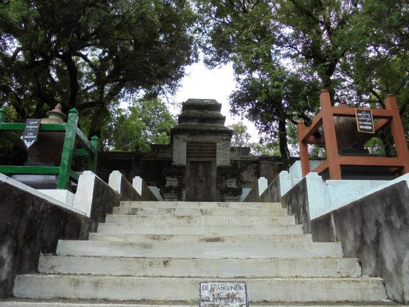
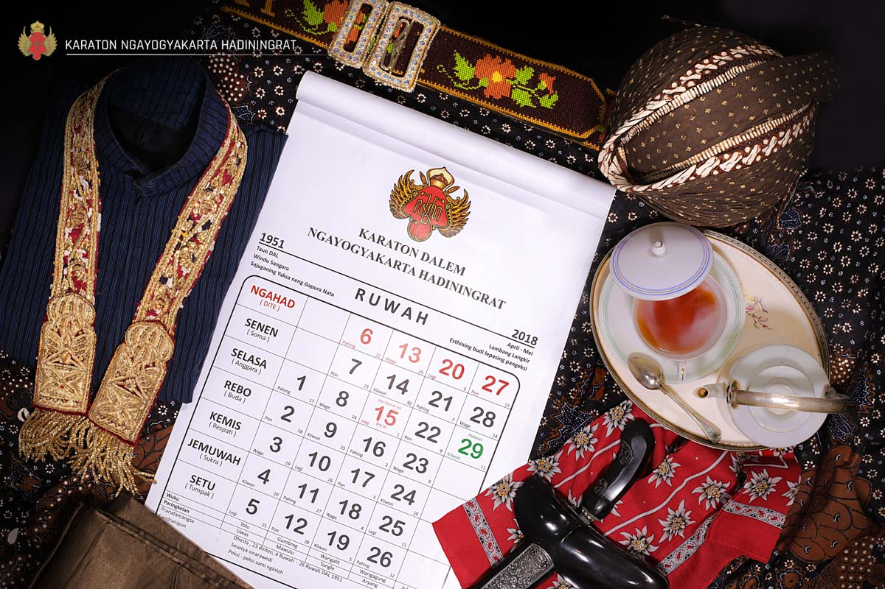
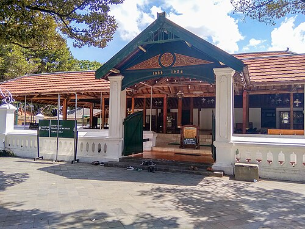

Makam Raja-Raja Imogiri
Lambang kekuasaan spiritual dan penghormatan terhadap leluhur raja. Menyimbolkan hubungan antara dunia fana dan akhirat.

Kalender Jawa Sultan Agung
Upaya menyatukan tradisi Jawa lama dengan nilai-nilai Islam, menciptakan identitas kultural yang khas bagi rakyat Jawa.

Masjid Agung Kotagede
Perpaduan arsitektur Jawa dan fungsi keislaman. Lambang penyebaran Islam lewat budaya lokal.

Kraton Kotagede
Ibu Kota Pertama di Kesultanan Mataram

Sastra dan Babad Mataram
Naskah-naskah sejarah dan sastra dalam bahasa Jawa (contoh: Babad Tanah Jawi).

Benteng Cepuri
situs peninggalan Kerajaan Mataram Islam di Kotagede yang berwujud rerutuhan-reruntuhan yang masih tersisa dari benteng yang dahulunya dibangun untuk melindungi Kedhaton atau Keraton Mataram